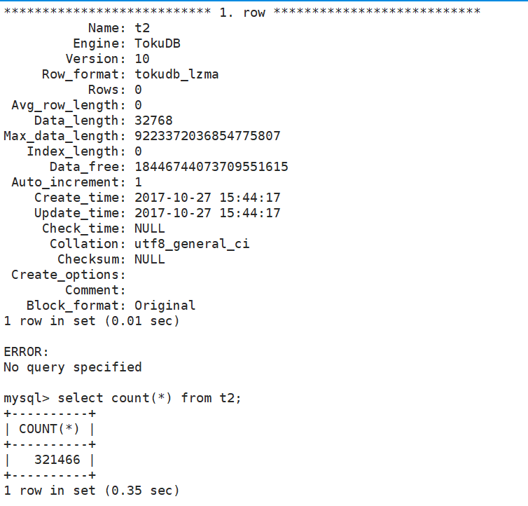

[root@ToBeRoot ~]# cat foo.sh #!/bin/bash for i in `seq 1 10000000` do echo "insert into t2 (user,hiredate) values ('user${i}',$((1509090554+$i)));" >> htap.sql done
[root@ToBeRoot ~]# bash foo.sh [root@ToBeRoot ~]# mysql -u zyadmin -pUploo00king -hpub-m-bp1d1b614a1911a4.petadata.rds.aliyuncs.com -P 3306 booboo_test< htap.sql mysql: [Warning] Using a password on the command line interface can be insecure. mysql> select count(*) from t2 where hiredate between unix_timestamp("2017-10-27 15:50:04") and unix_timestamp("2017-10-27 15:59:00"); +----------+ | COUNT(*) | +----------+ | 537 | +----------+ 1 row in set (0.14 sec)
查看测试表t2的具体情况

测试查询语句
mysql> explain select count(*) from t2 where hiredate between unix_timestamp("2017-10-27 15:50:04") and unix_timestamp("2017-10-27 15:59:00"); +-------+-------------+---------------------------------------------------------------------------------------------------------------------------------+ | Index | Partition | Info | +-------+-------------+---------------------------------------------------------------------------------------------------------------------------------+ | 0 | BOOBOO_TEST | Merge for Analysis: Merge Data; | | 1 | BOOBOO_TEST | select count(*) from t2 where hiredate between unix_timestamp("2017-10-27 15:50:04") and unix_timestamp("2017-10-27 15:59:00") | | 2 | BOOBOO_TEST | select count(*) from t2 where hiredate between unix_timestamp("2017-10-27 15:50:04") and unix_timestamp("2017-10-27 15:59:00") | | 3 | BOOBOO_TEST | select count(*) from t2 where hiredate between unix_timestamp("2017-10-27 15:50:04") and unix_timestamp("2017-10-27 15:59:00") | | 4 | BOOBOO_TEST | select count(*) from t2 where hiredate between unix_timestamp("2017-10-27 15:50:04") and unix_timestamp("2017-10-27 15:59:00") | +-------+-------------+---------------------------------------------------------------------------------------------------------------------------------+ 5 rows in set (0.01 sec)